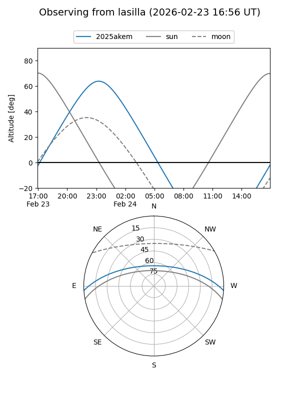
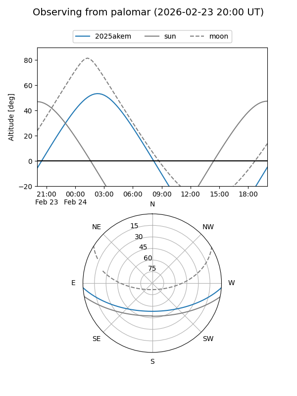
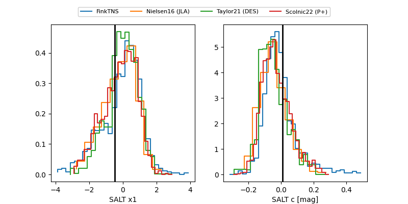

2025akem
Target 2025akem at 2026-01-09 12:49
Aliases and brokers:
FINK: link
Lasair: link
ALeRCE: link
TNS: link
YSE: link
alt names
ZTF25acgpzga (ztf,fink_ztf)
2025akem (tns,yse)
PS25krt (panstarrs)
Coordinates:
equatorial (ra, dec) = 71.6820,-3.26153
equatorial (HMS+DMS) = 04:46:43.67,-03:15:41.52
galactic (l, b) = (200.7088,-29.07378)
Flags:
Photometry:
last ztfg=20.38, ztfr=20.45
1 ztfg, 2 ztfr detections
Lightcurve

Visibility


Additional plots
